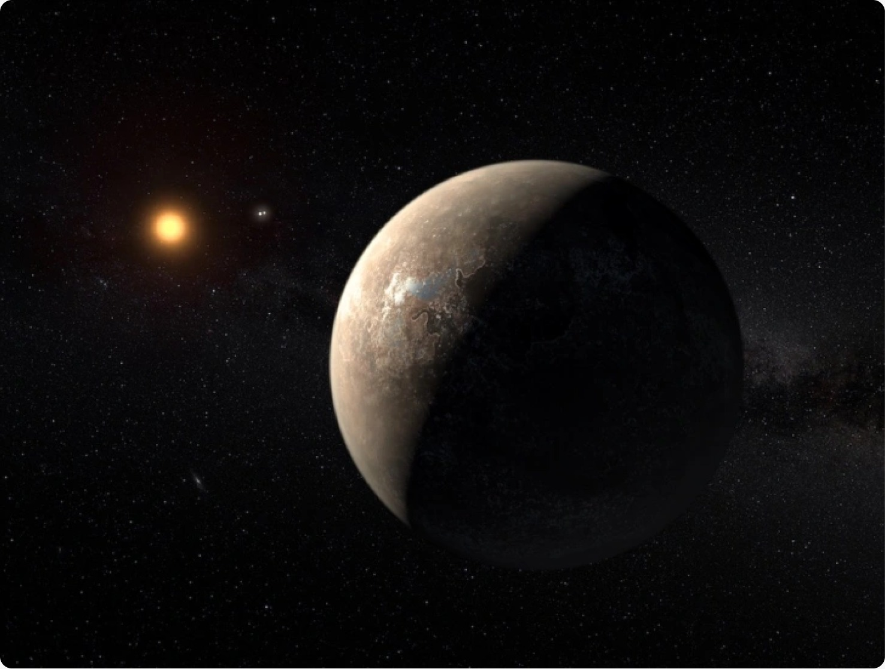
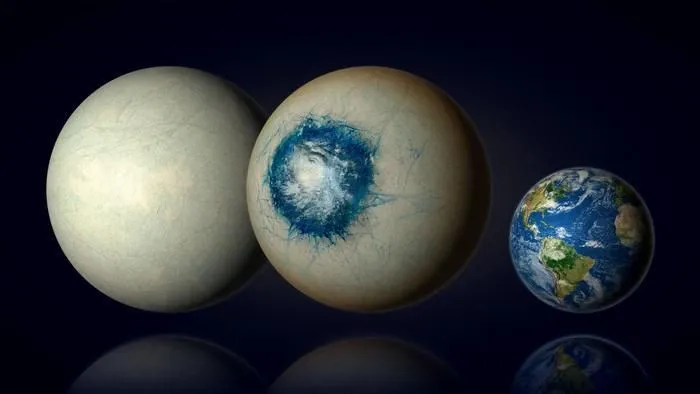

Estrelas





Sir Isaac Newton foi um matemático, físico, astrônomo, alquimista e teólogo inglês, considerado um dos maiores gênios da história da humanidade. Formulou as três leis do movimento e a lei da gravitação universal, revolucionando a física clássica. Inventou o cálculo infinitesimal independentemente de Leibniz e construiu o primeiro telescópio refletor funcional. Sua obra "Philosophiæ Naturalis Principia Mathematica" (1687) é um dos livros mais importantes da ciência. Foi presidente da Royal Society e mestre da Casa da Moeda. Newton estabeleceu as bases da mecânica clássica que dominaria a física por mais de dois séculos, até a chegada da relatividade de Einstein.
clique aqui para saber mais
Foi um professor lucasiano por trinta anos na Universidade de Cambridge - uma das mais prestigiosas cátedras de matemática do mundo, já ocupada por Isaac Newton -, exerceu o cargo de diretor de pesquisa do Departamento de Matemática Aplicada e Física Teórica e fundou o Centro de Cosmologia Teórica da Instituição. Considerado um dos físicos mais importantes da história, recebeu inúmeros prêmios e honrarias, incluindo a Medalha Presidencial da Liberdade, a maior condecoração civil dos Estados Unidos. Além de "Uma Breve História do Tempo", seus livros para o público geral são: O universo numa casca de noz, Buracos negros e a autobiografia Minha breve história. Hawking morreu em 2018, aos 76 anos, em Cambridge.
clique aqui para saber mais
Carl Edward Sagan foi um cientista planetário, astrônomo, astrobiólogo, astrofísico, escritor, divulgador científico e ativista norte-americano. Foi durante a vida um grande defensor do ceticismo e do uso do método científico. Promoveu a busca por inteligência extraterrestre através do projeto SETI e instituiu o envio de mensagens a bordo de sondas espaciais, destinadas a informar possíveis civilizações extraterrestres sobre a existência humana. Sagan é conhecido por seus livros de divulgação científica e pela premiada série televisiva de 1980 Cosmos: Uma Viagem Pessoal, que ele mesmo narrou e coescreveu.
clique aqui para saber mais
Tyson investiga formação e evolução estelar, como também cosmologia e astronomia. Já ocupou vários cargos em instituições como a Universidade de Maryland, Universidade de Princeton, o Museu Americano de História Natural e o Planetário Hayden. É autor de vários livros sobre astronomia como "Astrofísica para apressados", "Morte no buraco negro", "Origens" entre outras obras. Já escreveu e divulgou amplamente os seus pontos de vista sobre a religião, espiritualidade e a espiritualidade da ciência, incluindo as dissertações The Perimeter of Ignorance e Holy Wars que apareceram na revista Natural History e no workshop Beyond Belief de 2006. Tyson colaborou com o biólogo evolucionista em palestras sobre religião e ciência.
clique aqui para saber mais